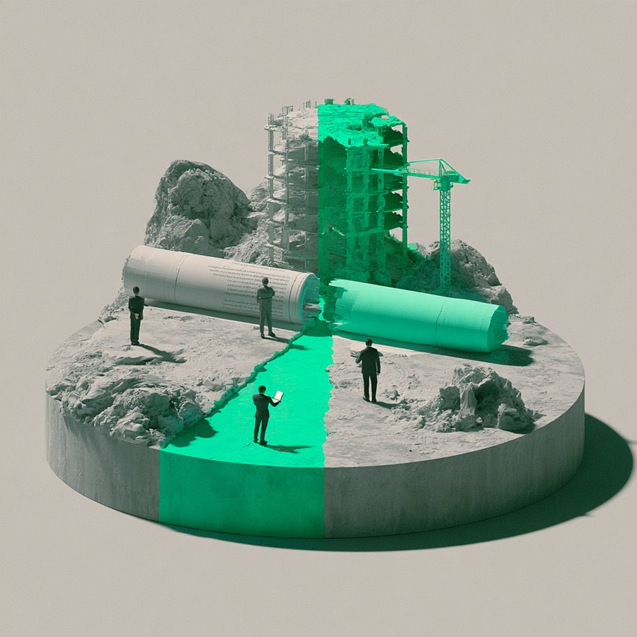

공사도급계약 해제에 따른 손해배상 청구 승소
A(의뢰인)는 B와 공사대금 7억 1,000만원, 공사기간 7개월로 정하여 건물을 신축하는 공사도급계약을 체결하였는데, B는 공사선급금으로 2억 1,000만원을 지급받았음에도 불구하고, 공사를 임의로 중단하고 더 이상 공사를 진행하지 않았으며, 이미 공사를 완료한 부분도 설계도면과 달랐다. 법원은, 공사업자인 B의 이행거절을 인정하여, 공사도급인인 A의 이행거절에 기한 해제권 행사를 인정하였고, B가 진행한 공사에 대해서도 계약내용과 다른 하자가 있으므로 철거해야 한다는 취지로 판단하여, 원고 A의 청구를 모두 인용하였습니다.

계약・사업 · 금전피해
—
승소
사건 개요
A(의뢰인)는 B와 공사대금 7억 1,000만원, 공사기간 7개월로 정하여 건물을 신축하는 공사도급계약을 체결하였는데, B는 공사선급금으로 2억 1,000만원을 지급받았음에도 불구하고, 공사를 임의로 중단하고 더 이상 공사를 진행하지 않았으며, 이미 공사를 완료한 부분도 설계도면과 달랐다. 이에 A는 B에 대하여 공사도급계약에 관하여 B의 이행거절을 원인으로 해제권을 행사하고, 이에 따라 기존에 지급하였던 공사대금의 반환청구 및 이 사건 건물부지를 사용하지 못한 손해 및 철거비용 상당의 손해배상을 청구를 하였습니다.
본 변호사의 전략 변호사 김용석
공사수급인이 공사 이행을 정당한 이유없이 진행하지 않는 경우에는 공사도급인은 이행거절을 원인으로 공사도급계약을 해제할 수 있습니다. 공사도급계약의 경우 해제를 하더라도 기존에 공사가 된 부분에 대해서는 공사대금을 인정하여 해제를 하더라도 기성고에 해당하는 공사대금의 반환을 청구할 수 없으나. 기존의 공사가 계약상의 내용과 다르고, 철거를 해야 하는 공사에 불과하다면, 해제할 수 있고, 그에 따라 기존에 지급하였던 공사대금 전부의 반환을 청구하고, 이 사건 건물의 부지를 사용하지 못한 차임상당을 손해배상을 청구하였습니다.
결과 및 판단
법원은, 공사업자인 B의 이행거절을 인정하여, 공사도급인인 A의 이행거절에 기한 해제권 행사를 인정하였고, B가 진행한 공사에 대해서도 계약내용과 다른 하자가 있으므로 철거해야 한다는 취지로 판단하여, 원고 A의 청구를 모두 인용하였습니다.
법률 인사이트
공사도급계약의 경우, 공사업자가 정당한 이유없이 공사를 진행하지 않은 것인지 여부, 기존의 공사가 공사도면에 따라 진행된 것인지 여부, 기성고에 따른 공사대금을 지급하여야 하는지 여부에 대하여 주장, 입증한다면, 기존의 진행한 공사가 있더라도 공사도급계약을 해제할 수 있습니다.